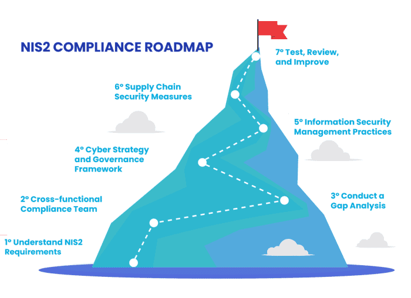

The Growing Threat:
Imagine this: A hacker targets a small software company that provides appointment scheduling for your local
GP. Suddenly, patient records become inaccessible, appointments are cancelled, and chaos ensues. This isn't a
far-fetched scenario.
The UK healthcare sector's shift to digital through electronic health records, telemedicine, interconnected
devices and other systems offers clear operational and patient-care benefits but also expands its cyber-attack
surface (Rice 2025). As cybercriminals increasingly target healthcare, robust security is essential to protect
patient safety, maintain data confidentiality and integrity, and ensure uninterrupted services.
Defining Supply Chain Vulnerabilities in UK Healthcare
In the context of UK healthcare, the supply chain refers to the end-to-end system that delivers everything a
health service needs from the manufacturers of drugs, devices, and consumables through national and regional
distribution networks, right to hospitals, GP practices, and, ultimately, patients. In modern healthcare, no
organization operates in isolation (Alzahrani et al. 2022).
A vulnerability in this context is any weakness in people, processes, or technology that could be exploited
accidentally or maliciously to compromise patient safety, data confidentiality, integrity, or system
availability.
Did You Know?
The average NHS Trust works with hundreds of different suppliers, from medical device manufacturers and
software providers to cleaning services and administrative support. Each of these connections is like
another door - if even one door has a weak lock, it could be an entry point for cybercriminals.
Common Supply Chain Vulnerabilities
Lack of Visibility
Many healthcare organizations lack comprehensive insight into the cybersecurity practices and overall
security posture of their numerous third-party vendors, making identifying and mitigating potential risks
difficult.
CISSP Domain: Security and Risk Management, Security Operations
Insufficient Security Measures by Vendors
Third-party vendors, particularly smaller entities or those not primarily focused on cybersecurity, may
have inadequate security controls, creating potential entry points for attackers (McBride 2024).
CISSP Domain: Software Development Security, Security and Risk Management
Inadequate Security Assessments
Healthcare organizations may not always conduct thorough and regular security assessments of their
third-party vendors, potentially overlooking significant security weaknesses (High 2025).
CISSP Domain: Security Assessment and Testing
Lack of Contractual Security Requirements
Contracts with third-party vendors may not always include sufficiently detailed and stringent
cybersecurity requirements, leading to ambiguity in security responsibilities (NHS Digital, 2023).
CISSP Domain: Security Architecture and Engineering
Poor Data Management by Vendors
Third-party vendors handling sensitive patient data may not always adhere to robust data management
practices, increasing the risk of data breaches.
CISSP Domain: Asset Security, Security and Risk Management
Excessive Access Rights Granted to Vendors
Healthcare organizations might inadvertently grant overly broad access rights to their internal systems
and sensitive data to third-party vendors, expanding the potential for misuse or compromise (McBride
2024).
CISSP Domain: Identity and Access Management (IAM)
Real-World Examples of Supply Chain Attacks
SolarWinds Attack (2020)
In late 2020, attackers carried out a supply-chain compromise of SolarWinds' Orion IT monitoring platform
by inserting malicious code (known as SUNBURST) into routine software updates released between March and
June 2020. Once deployed, the backdoor granted the adversary stealthy, high-privilege access to customer
networks—roughly 18,000 organizations worldwide, including government agencies and critical infrastructure
operators (Michael 2023).
WannaCry NHS Attack (2017)
In May 2017, the WannaCry ransomware, leveraging the NSA's "EternalBlue" exploit, infected over 200,000
devices worldwide and struck 34 NHS hospital trusts (about 34% of all trusts in England), locking staff out
of PCs, MRI scanners, and other critical systems. The damage was worsened by vulnerable third-party
software—many trusts were still running unsupported Windows XP and other unpatched systems supplied by
external vendors, leaving them unable to receive crucial security updates (Ghafur et al. 2019).
Medical Device Vulnerabilities (2025)
The FDA has issued alerts about cybersecurity flaws in Contec CMS8000 and Epsimed MN-120 patient monitors
that could allow unauthorized remote control or malfunction. Healthcare providers, facilities, patients and
caregivers are being warned of these risks (Dixon 2025).
Critical Analysis of Existing Supply Chain Security Solutions
Current Landscape
UK healthcare organizations are using various approaches to defend against supply chain threats
(Papaphilippou et al. 2023):
- Security Frameworks: Adoption of frameworks like ISO 27001, NIST Cybersecurity Framework,
and Cyber Essentials.
- Asset Security: Regular security audits and penetration tests on systems and vendors.
- Security Assessment: Conducting security audits and penetration testing of internal
systems and third-party vendors.
- Security Operations: Developing and testing incident response plans for cybersecurity
incidents, including supply chain attacks.
Strengths and Weaknesses
While existing solutions provide a foundation, significant gaps remain:
- Frameworks like Cyber Essentials provide a starting point
- Vendor risk management programs help identify risks
- Growing awareness of supply chain vulnerabilities
- Established incident response procedures
- Lack of visibility into entire supply chain
- Inconsistent enforcement of security standards
- Reliance on self-assessment and infrequent audits
- Increasing complexity of supply chains
- Limited resources for continuous monitoring
Supply Chain Security Assurance Framework (SCSAF)
The Supply Chain Security Assurance Framework (SCSAF) adopts a risk-based approach aligned with both NIS2
requirements and CISSP domains. It provides healthcare organizations with practical steps to identify, assess,
and mitigate supply chain vulnerabilities:

Figure 1: NIS2 Compliance
Roadmap for Supply Chain Management
Step 1: Map Your Supply Chain
This initial step creates a comprehensive inventory of all external entities your healthcare organization
relies upon. Without a clear understanding of your supply chain, you'll have blind spots that are prime
targets for attackers. This mapping helps visualize the flow of data, services, and goods and identify
critical pathways.
Focus particularly on these critical vendor categories:
- Medical device manufacturers and firmware providers: Crucial due to direct impact on
patient care and safety. Compromised devices or malicious firmware updates can have life-threatening
consequences.
- Cloud service providers with access to patient data: Many organizations store and
process patient information in the cloud. Their security is paramount to maintaining data confidentiality
and compliance.
- Software vendors supplying clinical applications: These are integral to daily
operations, from electronic health records to appointment scheduling. If compromised, they can disrupt
services and expose patient data.
- Data processors handling sensitive information: Includes any third party processing
patient data, such as analytics firms or transcription services. Their security practices directly impact
your organization's data security.
Step 2: Categorize Vendors by Risk
Risk categorization allows you to prioritize security efforts and focus stringent controls on vendors
posing the highest risk. This ensures you're not spreading resources too thin.
Evaluate using standardized risk criteria:
- Criticality to clinical operations: How essential is this vendor to delivering patient
care? A compromise of a highly critical vendor could lead to immediate and severe disruptions.
- Level of access to sensitive data: How much access does the vendor have to patient
health information or other sensitive data? Vendors with extensive access pose higher risk of data
breaches.
- Security maturity of the supplier: What is the vendor's own cybersecurity posture? A
vendor with weak security is an easier target for attackers, who could then pivot to your systems.
- Complexity of the supply relationship: How integrated is the vendor's system with your
own? More complex integrations can create more potential attack pathways.
Step 3: Conduct Security Assessments
For vendors identified as high-risk, conduct thorough security assessments beyond simply asking about their
security practices. These provide an objective evaluation of security controls and identify potential
weaknesses.
Types of assessments include:
- Questionnaires and documentation reviews to gather information about policies, procedures, and technical
controls
- Security audits: Independent reviews of security practices against established standards
- Penetration testing: Simulated cyberattacks to identify vulnerabilities
Step 4: Review and Update Contracts
Contracts provide formal agreement on security responsibilities. Clearly defined security clauses ensure
vendors are legally obligated to meet security standards and provide accountability for incidents.
For Medical Device Firmware:
- Require cryptographically signed firmware updates to ensure integrity
- Implement network segmentation for medical devices to limit breach impact
- Deploy medical device security monitoring solutions
- Establish firmware validation protocols
For Third-Party Data Processors:
- Implement vendor privileged access management to control access rights
- Establish data processing agreements with specific security requirements
- Deploy continuous third-party security monitoring
- Conduct regular security assessments
Step 5: Implement Continuous Monitoring
The threat landscape is constantly evolving, and a vendor's security posture can change over time.
Continuous monitoring helps detect new vulnerabilities or security incidents that arise after initial
assessment.
Methods include:
- Security information and event management (SIEM) systems to monitor security logs
- Threat intelligence feeds to stay informed about emerging threats
- Regular communication with vendors to maintain open dialogue about security
- Periodic reassessments to verify ongoing compliance
SCSAF Effectiveness:
Research by the National Cyber Security Centre (2023) shows that organizations implementing similar
frameworks experience 43% fewer supply chain-related incidents compared to those without structured
approaches.
Final Recommendation:
The bottom line is prioritising supply chain security is no longer optional—it is a fundamental
imperative for protecting the operational integrity of the UK healthcare system, safeguarding sensitive
patient
data, and ultimately ensuring the safe and effective delivery of care.